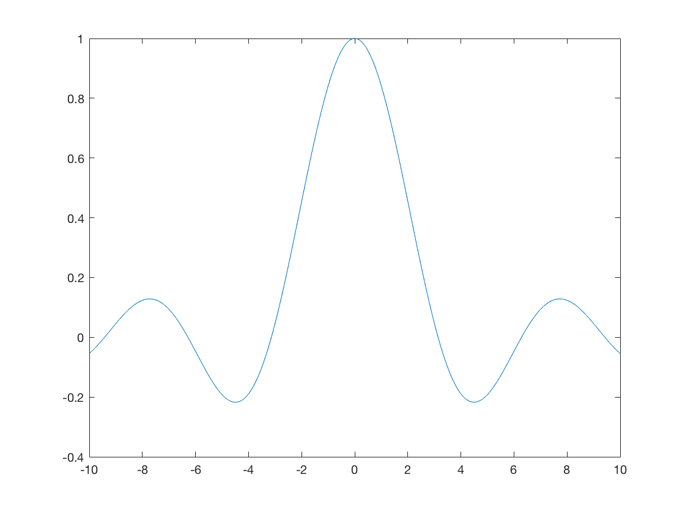

A=[6 3 9 9;8 -8 9 0;7 4 7 -6; 8 1 9 -7];
b=[75 19 12 9];
b=b';
x= linsolve(A,b);
P=pascal(10);
t = -10:0.01:10;
y = sin(t)/t;
for k=1:length(t)
if t(k) ==0
y(k)=1;
else
y(k)=sin(t(k))/t(k);
end
end
plot(t,y)

x = -2:0.05:2;
y = x;
z = x.^2-0.5*y.^2;
plot3(x,y,z,'LineWidth',2)
grid on
label(' My 3D Curve');
xlabel('\it x');
ylabel('\it y');
view(-20,20)
Undefined function 'label' for input arguments of type 'char'.
Error in Signals_HW_2 (line 29)
label(' My 3D Curve');
xh = 0:6/9:6;
yh = exp(-0.4*(xh-3).^2);
hold on
x = 0:6/999:6;
y=exp(-0.4*(x-3).^2);
xlabel('x');
ylabel('y');
axis tight
t=0:0.001:4;
x1=-5+2*(exp(1).^(-t)).*cos(20.*t);
y1=-5+2*(exp(1).^(-t)).*sin(20.*t);
z=4.*t
plot3(x1,y1,z)
hold on
x2=-5+2*(exp(1).^(-t)).*cos(20.*t);
y2=5+2*(exp(1).^(-t)).*sin(20.*t);
plot3(x2,y2,z)
hold on
x3=5+2*(exp(1).^(-t)).*cos(20.*t);
y3=-5+2*(exp(1).^(-t)).*sin(20.*t);
plot3(x3,y3,z)
hold on
x4=5+2*(exp(1).^(-t)).*cos(20.*t);
y4=5+2*(exp(1).^(-t)).*sin(20.*t);
plot3(x4,y4,z)
x= 0:0.001:6;
y=4.*exp((-0.5.*(x-3).^2));
f=@(x) 4.*exp((-0.5.*(x-3).^2));
Q=integral(f,4,5);
plot(x,y)
hold on
xd = 4:0.001:5;
yd = 4.*exp((-0.5.*(xd-3).^2));
xt=[4 xd 5];
yt=[0 yd 0];
fill(xt,yt,'r');
text(5,1,sprintf('Q = %1.4f ', Q),'FontSize',16,'FontWeight','Bold');
text(3,2,sprintf('-> A= 4->5? 4*exp{-0.5*(x-3)^2} dx', Q),'FontSize',16,'FontWeight','Bold');
text(3,3,sprintf('y = 4*exp{-0.5*(x-3)^2} ', Q),'FontSize',16,'FontWeight','Bold');
xd=-20:40/99:20;
yd=xd;
[x,y]=meshgrid(xd,yd)
r=sqrt(x.^2+y.^2)
z=sin(r)./r
plot3(x,y,z,'k')
mesh(x,y,z);
string1 = ['X of first coordinate'];
string2 = ['Y of first coordinate'];
string3 = ['X of second coordinate'];
string4 = ['Y of second coordinate'];
x1 = input(string1);
y1 = input(string2);
x2 = input(string3);
x3 = input(string4);
plot(x1,y1,'r','MarkerSize',30);
hold on
plot(x2,y2,'b','MarkerSize',30);
hold on
m = (y2-y1)/(x2-x1);
if x1>x2
for k = x2:(x1-x2)/10:x1;
y=m*k-m*x1+y1;
plot(k,y,'--og','MarkerSize',5);
hold on
plot(x1,y1,'r.','MarkerSize',20);
plot(x2,y2,'r.','MarkerSize',20);
axis([0 6 0 6]);
pause (0.5)
hold off;
end
else
for k = x1: (x2 - x1)/10:x2
y = m*k - m*x1 + y1;
plot(k,y,'og','MarkerSize',5);
hold on
plot(x1,y1,'r.','MarkerSize',20);
plot(x2,y2,'r.','MarkerSize',20);
axis([0 6 0 6]);
pause (0.5);
hold off;
end
end